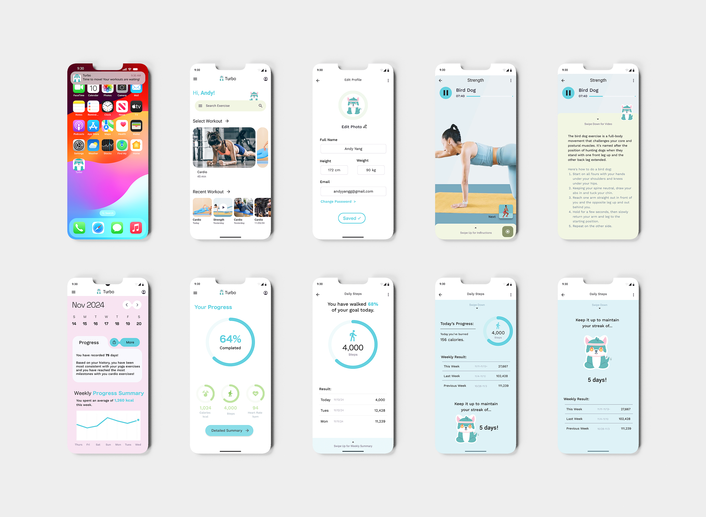

The Problem
Most fitness apps track data but fail to keep users engaged. Research showed people abandon apps due to overwhelming layouts, unclear progress indicators, and no sense of emotional reward for showing up.
The Solution
A fitness app that uses streak-based reinforcement, personalized progress visuals, and a playful mascot to make daily movement feel achievable and genuinely rewarding rather than clinical.
TL;DR
UX design project reimagining how fitness apps support long-term habit building through emotional engagement
Challenge
Users abandon fitness apps because raw data without emotional context feels meaningless. 42% of surveyed users called existing apps uninspiring or too clinical to build a habit.
Approach
User research first. Surveys and interviews across 18-34 age groups revealed that streaks and milestone badges beat raw numbers for motivation. Design decisions followed the data.
Solution
High-fidelity Figma prototype with streak tracker, weekly progress visuals, real-time workout interface, and a mascot character that responds to user milestones.
Impact
95% of testers located the Daily Summary in under 15 seconds. User testing feedback directly drove layout changes, label rewrites, and streak visibility improvements.
Key Design Decisions
Three choices that defined how Turbo turns data into motivation.
01
Streaks over stats
88% of users found streaks and milestone badges more motivating than raw numbers. The streak tracker moved to the top of the Summary page after testing confirmed users wanted it front and center, not buried.
02
Mascot as emotional layer
A playful character responding to user milestones adds an emotional register that pure data visualization cannot. It makes the app feel like it is rooting for you rather than just recording you.
03
Labels over jargon
Testing revealed users understood completion percentage but not conversion rate. Every metric label was rewritten for plain language. Clarity of copy is a design decision, not a copy decision.
User research drove every major design decision before any screen was designed.
Surveys and interviews with 18-34 age group fitness app users. 78% wanted clearer visual metrics. 88% found streaks more motivating than raw numbers. 42% called existing apps too clinical.
Simplify navigation and surface essential metrics. Introduce motivational streaks, a playful mascot, and supportive copy to make progress feel rewarding rather than transactional.
Sitemap and flowmap built to streamline two core pathways: Track Progress to Streak Summary to Detailed Metrics, and Select Workout to Live Session to Instructions Swipe.


High-fidelity prototype built entirely in Figma, iterated through user testing.
Circular step tracker, calorie and heart rate metrics, clear completion percentage, and motivational streak tracker with mascot. Streak moved to top after testing feedback.
Three-panel summary comparing this week, last week, and previous week with a clean line graph and contextual feedback. Makes progress visible across time, not just today.
Real-time timer, swipeable instructions, and next workout previews built with a consistent rounded component style and color-coded workout types.



Visual system and interactive prototype built in Figma.


This project taught me that motivation is a design problem, not just a product feature. The research kept pulling me back to one insight: users do not quit because the app lacks features, they quit because the app does not make them feel anything. Designing around that meant treating copy, mascot personality, and visual hierarchy with the same rigor as layout. Testing also sharpened my instinct for what to iterate on versus what to leave alone. Moving the streak tracker up because users asked for it was easy. Recognizing that the completion percentage label was a bigger usability problem than the visual design around it took more careful observation.